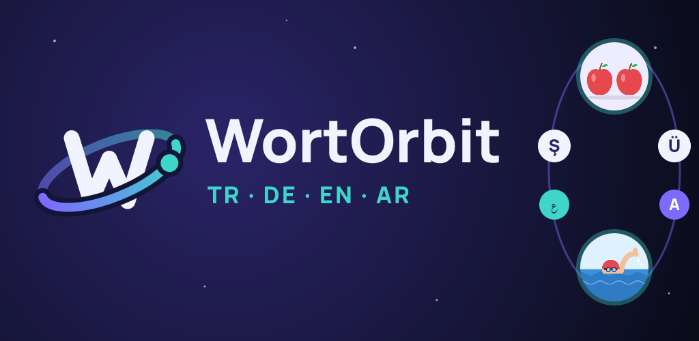

WortOrbit kelime öğrenmeyi bir harf oyununa çeviriyor. Her harf için ipucu kendi dilinde okunur, sen de cevabı öğrendiğin dilde yüksek sesle söylersin.
- Türkçe, Almanca, İngilizce ve Arapça arasında 12 öğrenme yönü
- A1'den C2'ye altı seviye, binlerce kelime ve anlamını gösteren resimler
- Hesap yok, reklam yok, takip yok: ilerlemen yalnızca cihazında kalır
Gizlilik politikası
İletişim
Narli-Digital
info@narli-digital.de
info@narli-digital.de